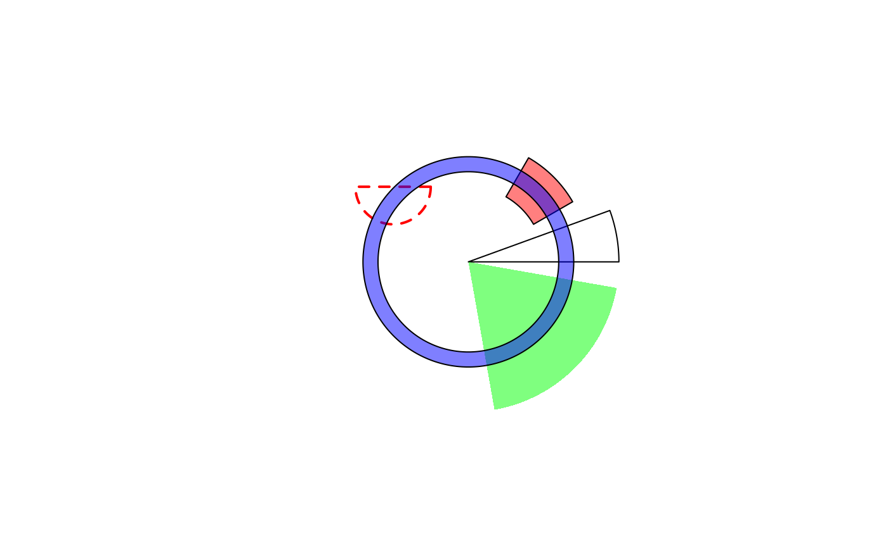
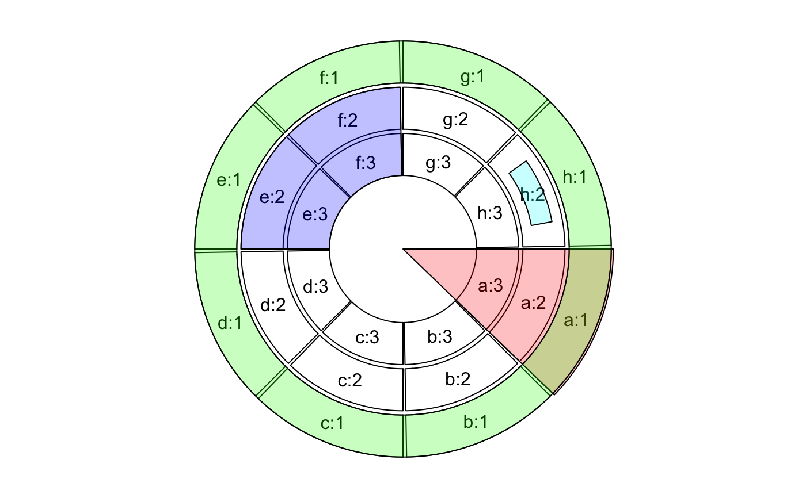

draw.sector.RdDraw sectors or rings in a circle
draw.sector( start.degree = 0, end.degree = 360, rou1 = 1, rou2 = NULL, center = c(0, 0), clock.wise = TRUE, col = NA, border = "black", lwd = par("lwd"), lty = par("lty"))
| start.degree | start degree for the sector |
|---|---|
| end.degree | end degree for the sector |
| rou1 | Radius for one of the arc in the sector |
| rou2 | Radius for the other arc in the sector |
| center | Center of the circle |
| clock.wise | The direction from |
| col | Filled color |
| border | Border color |
| lwd | Line width |
| lty | Line style |
If the interval between start and end (larger or equal to 360 or smaller or equal to -360)
it would draw a full circle or ring. If rou2 is set, it would draw part of a ring.
draw.sector(20, 0)draw.sector(30, 60, rou1 = 0.8, rou2 = 0.5, clock.wise = FALSE, col = "#FF000080")draw.sector(350, 1000, col = "#00FF0080", border = NA)draw.sector(0, 360, rou1 = 0.7, rou2 = 0.6, col = "#0000FF80")draw.sector(get.cell.meta.data("cell.start.degree", sector.index = "a"), get.cell.meta.data("cell.end.degree", sector.index = "a"), rou1 = 1, col = "#FF000040")draw.sector(0, 360, rou1 = get.cell.meta.data("cell.top.radius", track.index = 1), rou2 = get.cell.meta.data("cell.bottom.radius", track.index = 1), col = "#00FF0040")draw.sector(get.cell.meta.data("cell.start.degree", sector.index = "e"), get.cell.meta.data("cell.end.degree", sector.index = "f"), get.cell.meta.data("cell.top.radius", track.index = 2), get.cell.meta.data("cell.bottom.radius", track.index = 3), col = "#0000FF40")pos = circlize(c(0.2, 0.8), c(0.2, 0.8), sector.index = "h", track.index = 2) draw.sector(pos[1, "theta"], pos[2, "theta"], pos[1, "rou"], pos[2, "rou"], clock.wise = TRUE, col = "#00FFFF40")